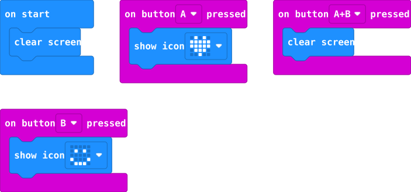

Mentor reference · Jennifer + Stephanie · November 16, 2026
Make the model. Show how it works.
Pull exact parts from Stauffer’s 2026–27 purchased materials, assemble a working example, rehearse its demonstration, and keep a repairable prototype ready for the Femineers workday.
These are order quantities and “Quantity Received” flags, not a live count of unused parts.
Not marked received
Hummingbird Bit Premium Kits (10) are marked FALSE; also listed not received: glow-in-the-dark PLA, masking tape, and spare craft-knife blades.
Check the physical storage bins before promising motor or sensor demonstrations. A checked-in Hummingbird kit may be used even if the Sheet was not updated.
Electrical release gate: Verify the actual Leyal LED’s polarity and current limiting, the switched holder’s terminal markings, and its compatibility with a single 3V CR2032 before installing a battery. Supplier-reference photos below are for identification, not proof that our parts are electrically interchangeable. Keep all loose coin cells under mentor control.
Model 01 · Jennifer · Wearables
Removable light-up felt patch on a bucket hat
Make a small felt patch with one proven working LED first. Only add a second LED after the battery, current-limiting design, brightness, and separate thread paths have been bench-tested. Attach the patch to a white bucket hat with hook-and-loop tape. The hat can be decorated later.
Pull these pictured electronics and tools
LilyPad sewable LEDPull: 1 to start; 2 optional after bench testASIN B07G151KLF · Photo sourceSparkFun · equivalent example. Reference photos, not pictures of delivered inventory.Switched CR2032 LilyPad holderPull: 1ASIN B09FDRXN7K · Photo sourceSparkFun · equivalent example. Reference photos, not pictures of delivered inventory.CR2032 coin cellPull: 1 + 1 mentor-held spareASIN B0833P2R1T · Photo sourceSparkFun · equivalent example. Reference photos, not pictures of delivered inventory.Conductive threadPull: 1 bobbinASIN B07PFTXZLG · Photo sourceOrdered item reference. Reference photos, not pictures of delivered inventory.Large-eye needlePull: 2ASIN B0893412R4 · Photo sourceSparkFun · equivalent example. Reference photos, not pictures of delivered inventory.Needle threaderPull: 1ASIN B091XXL95S · Photo sourceOrdered item reference. Reference photos, not pictures of delivered inventory.
Connection diagram · one-LED reference
Concept illustration: not an exact terminal layout or substitute for the component datasheet. Orient the real parts to match their printed +/− pads, and route each path on both sides of the fabric without crossing.
Additional supplies to stage
White felt: 2 sheets (B0BKQ37Z2L)
White bucket hat: 1 (B0DTTJ5WZB)
Hook-and-loop tape: 8–12 inches (B0G6KQC3P5)
Aleene’s Fabric Fusion glue: 1 (B078HK7ZQ5)
TULIP puff paint: 1 set (B0BRP31W2R)
Nonconductive Coats & Clark thread for securing decorative pieces (B0033PEEDI)
Classroom scissors, needle container, fabric pencil, and multimeter if available
Identify and inspect. Put the actual LED and switched holder on the table next to their package labels. Confirm + and − pads, permitted battery voltage, and whether the LED includes necessary current limiting. Tri releases the powered circuit only after this check.
Lay out the patch. Cut a felt shape roughly 4 × 5 inches. Place the holder at the back/bottom and the LED toward the visible center; leave the switch and cell accessible. Draw two non-crossing paths with a fabric pencil.
Secure the parts without power. Keep the coin cell out. Tack the holder and LED onto felt so pads stay accessible. Thread a JNENERY needle with a TOOVREN threader.
Sew the positive route. Use one dedicated piece of conductive thread from the holder’s actual + tab to the LED’s + tab. Make several snug loops through each metal hole; tie and trim ends short.
Sew the negative route. Use a separate piece of conductive thread from the LED’s − tab to the holder’s − tab. Inspect both faces of felt: no crossed stitches, stray conductive tails, or touching metal paths.
Mentor power test. With a verified current-limited LED and compatible holder, Tri inserts one CR2032 and slides ON briefly. The LED should shine steadily without heat, smoke, odor, or needing pressure. Switch OFF immediately afterward. If it fails, remove the cell before changing anything.
Attach and decorate. Mount the patch to the hat with the purchased sew-on hook-and-loop tape. Keep the power switch accessible and batteries supervised. Decorate around the electronics with approved paint or glued felt; never paint over the contacts.
Rehearse. Show an unpowered close-up, then a short mentor-controlled ON/OFF demonstration. Photograph the front, back, and working light for the November 16 station card.
Battery safety: Coin cells are a serious swallowing hazard. Do not hand loose CR2032 cells to students or leave them in student-accessible bins. Remove cells from prototypes before storage; keep the entire powered demonstration under adult supervision. Stop use if a cell or component becomes warm or damaged.
Model 02 · Stephanie · Creative Robotics fallback
Interactive micro:bit robot face
Use one W-labeled MakeCode micro:bit to demonstrate input → program → output while waiting for Hummingbird kit confirmation. A and B buttons change its LED face. This is a working coding demonstration, not a motorized robot or a replacement for the two-output final Robotics project.
GeeekPi micro:bit V2 Club KitPull: 1 board + battery pack + USB cableASIN B0BGRRYXSG · Photo sourceAdafruit · equivalent kit. Reference photos, not pictures of delivered inventory.micro:bit V2 boardPull: 1 from the Club KitASIN B0BGRRYXSG · Photo sourceAdafruit · reference. Reference photos, not pictures of delivered inventory.
Micro-USB data cablePull: 1 from the Club KitASIN B0BGRRYXSG · Photo sourceBirdBrain · reference. Reference photos, not pictures of delivered inventory.
Build the face around the board
Illustration is a construction concept, not a photo of a completed student project.
Reference MakeCode Blocks starter

Existing on-site blocks guide. A = heart, B = happy, A+B = clear screen.
Verify the kit. Retrieve one GeeekPi micro:bit V2, its correct 2×AAA battery holder, working USB data cable, and matching charged batteries. Keep W MakeCode and R BirdBrain firmware boards separately labeled.
Create the robot face. Use two felt sheets or scrap cardboard from the classroom. Cut a large central opening so both buttons, the LED matrix, connector, and reset remain reachable. Make the micro:bit removable with hook-and-loop tape; do not glue it to the board.
Open the prepared MakeCode project. On a school Windows laptop, open the linked Blocks starter. In the Blocks workspace, check three Input events: on button A pressed, on button B pressed, and on button A+B pressed. Confirm their Basic show/clear display blocks.
Simulate first. In MakeCode’s simulator, click A (heart), B (happy), then A+B (blank). If desired, add an Input → on shake event and a Basic → show icon block for a surprised face. Keep the final project entirely in Blocks.
Transfer to the physical board. Disconnect battery power while using USB in this classroom setup. Use the tested USB data cable and MakeCode Download / Connect Device workflow. Wait for flashing to finish. If pairing fails, follow the manual .hex-to-MICROBIT drive directions in the linked mentor guide.
Mount and test on batteries. Unplug USB, attach the correct 2×AAA kit holder, secure the holder behind the face, and check A, B, A+B, and reset. If adding shake, also check the battery pack stays attached when moving.
Decorate, keep access. Add felt/paint accents without covering buttons, the LED display, the board’s connectors, or the power switch. Take an assembled front photo and an accessible rear photo.
Prepare the demonstration question. Ask students: “What is the input? What does the program decide? What is the output?” Then let a student press A or B while a mentor holds the model.
Quick test: A shows a heart; B shows a smile; A+B clears; battery power works after USB is removed; there are no exposed sharp fasteners. The optional shake event works if Stephanie added it.
Upgrade path · once physically checked in
Optional: Hummingbird moving robot model
The purchase sheet lists 10 Hummingbird Bit Premium Kits, but currently flags them as not received. Only build this extension if Jennifer, Stephanie, and Tri locate and verify a complete physical kit.
Hummingbird Bit controllerPull: 1 verified controllerASIN · Photo sourceBirdBrain · manufacturer reference. Reference photos, not pictures of delivered inventory.Hummingbird position servoPull: 1 verified servoASIN · Photo sourceBirdBrain · manufacturer reference. Reference photos, not pictures of delivered inventory.Hummingbird distance sensorPull: 1 verified sensorASIN · Photo sourceBirdBrain · manufacturer reference. Reference photos, not pictures of delivered inventory.Hummingbird single-color LEDPull: 1 verified LEDASIN · Photo sourceBirdBrain · manufacturer reference. Reference photos, not pictures of delivered inventory.
Live test plan: Pair its dedicated R micro:bit with the Hummingbird controller using the documented BirdBrain firmware, connect distance sensor to SENSORS 1, LED to LEDS 1, and position servo to SERVOS 1 as described in the existing mentor guide. Use the correct Hummingbird power supply and the BirdBlox iPad app (not the standalone MakeCode W board setup). Program: near hand → light on and servo gently moves; far hand → light off and servo returns to the safe angle. Keep the servo arm unobstructed and confirm all port labels before powering.
Additional classroom tools to locate separately: sharp scissors, multimeter, fabric pencil, powered hot-glue gun, iPad or Windows laptop, labeled storage bins. These tools are not all individually confirmed in the Stauffer receiving rows.
Rehearsal & November 16 release checklist
Jennifer · Wearables
Stephanie · Robotics
Before the workday: Stage one working model plus a few labeled spare components per pathway; take a close-up photo of each working model; label the battery holders and kits; prepare the first 5-minute explanation. November 16 students will still build and test their own approved designs—these models are examples, not prescribed finished projects.